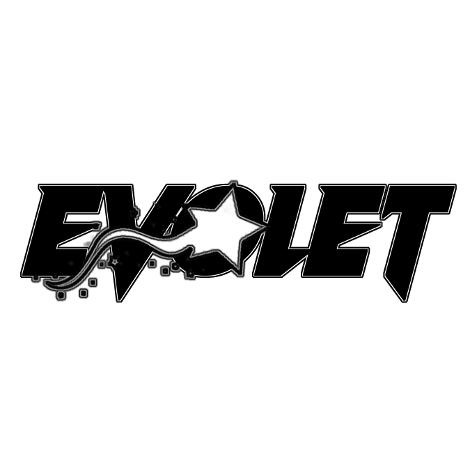
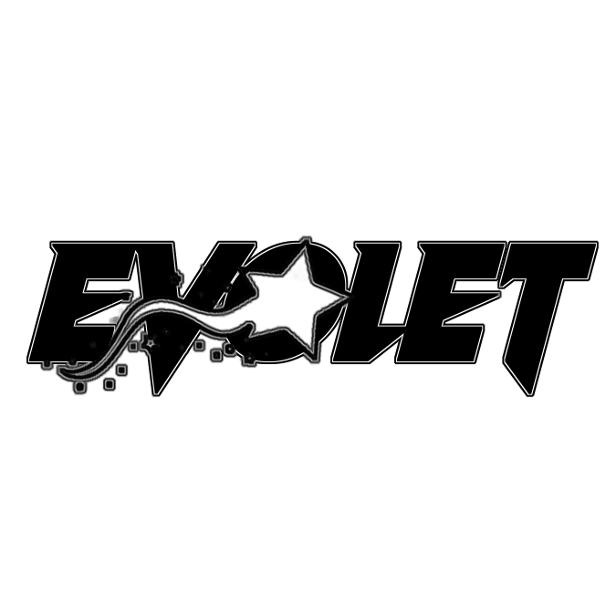

Romina Belen Pacheco Aka Evolet
Evolet es Belén Pacheco, una reconocida música de trance psicodélico de Buenos Aires, Argentina. Belen comenzó a producir psytrance en 2018 y ha estado lanzando música desde 2020.
El sonido de Evolet no es fácil de definir, ya que incorpora características de diferentes subgéneros de psytrance y, en general, tiende a cambiar de un álbum a otro. Independientemente de la versión de Evolet que experimentes, se garantiza que estará llena de líneas de bajo gruesas y bien definidas, potentes pistas psicodélicas y secuencias de primer nivel.
Cortesía de su productiva producción musical y su posterior popularidad en la escena internacional del psytrance, Evolet viaja regularmente por el mundo y toca en vivo y como DJ en varios eventos de música dance. Entre algunos de los festivales más grandes en los que ha aparecido se encuentran el conocido Boom Festival (Portugal), Sonica (Italia), Antaris (Alemania), Transcendence (Brasil) y Hadra (Francia), entre otros